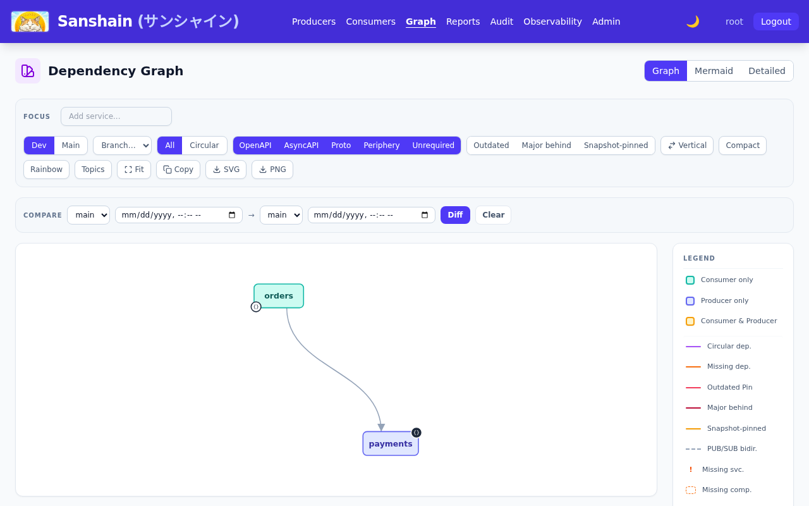
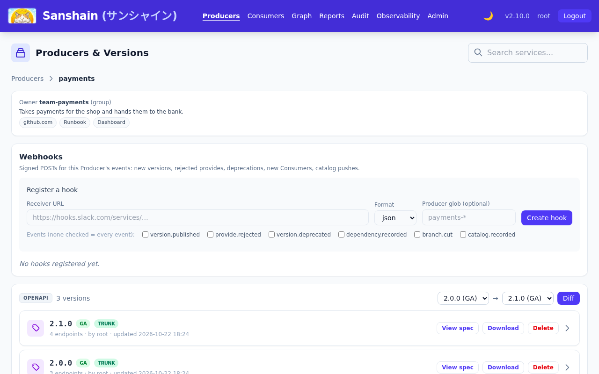
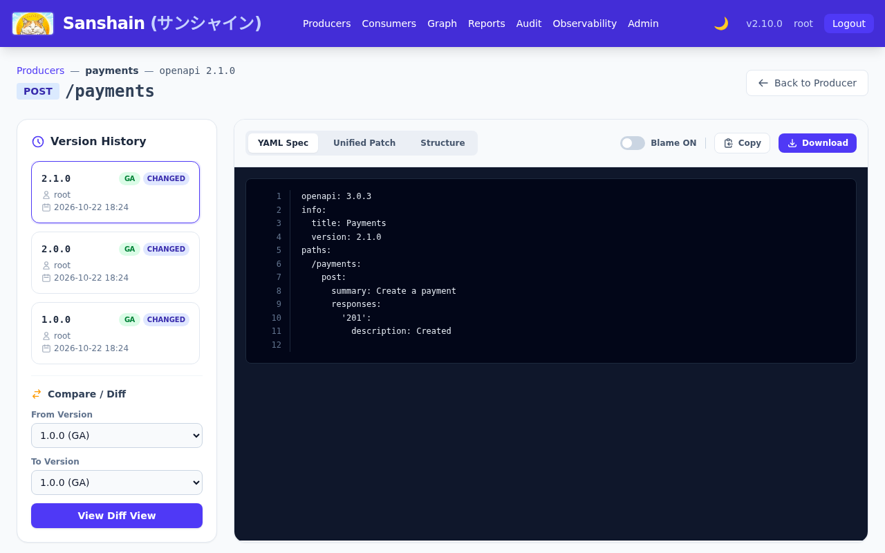
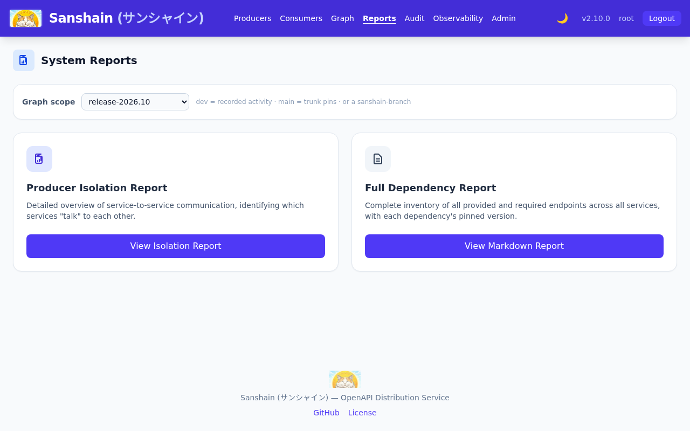
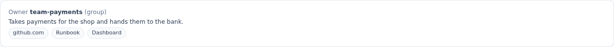

1. A first sanshain.yaml and a snapshot
The payments team writes the one file every client reads and keeps the version where it
belongs: in the spec. Their trunk pipeline runs cargo sanshain provide --trunk.
Nothing says snapshot; that is the default.
payments/sanshain.yaml
payments/openapi.yaml
The client, in the pipeline
What the catalog holds now
What to notice
-
The version
1.0.0came frominfo.version; the client sent only the stability. - Two endpoints were split out of the document (
endpoint_count: 2). -
A snapshot has an
expires_at: it ages out when nobody provides or requires it (the operator sets the days).trunk_provided_atsays trunk CI was here.
Go deeper
sanshain.yaml: provides · Clients: cargo-sanshain · Getting started: the first provide · POST /provide · GET /producers/{producername}/versions
2. The same number as GA
The team is happy with 1.0.0 and releases it. Same document, same number,
"stability": "ga"; recorded by hand, to show the exchange the clients make with
--ga.
What to notice
-
"promoted": true: the snapshot became the GA version in place, nothing was stored twice. -
changesare all zero because the bytes are identical; the number is now claimed for good. - Publishing GA needs the releaser role; the token's owner has it.
Go deeper
API lifecycle: going GA · CI integration: stability from the pipeline · Glossary: promotion · POST /provide
3. orders pins an endpoint and fetches its snippet
The orders team needs one operation. Their sanshain.yaml names the Producer, the
exact version and the endpoint; the JavaScript client fetches the snippet and writes it where
the code generator expects it. Then the same require by hand, to see the headers.
The client, in the orders pipeline
The same require by hand

What to notice
-
The snippet is a complete OpenAPI document that holds only
POST /payments. -
x-sanshain-stability: gasays what answered;x-sanshain-resolution: servedthat the pin resolved. A pin to a version that does not exist is404, a version that exists but lacks the endpoint is410; there is no fallback. -
The
etaglets the next build skip generation when nothing changed; the clients send it for you. -
trunk=truerecords the pin in the main graph, the one a release will be cut from.
Go deeper
sanshain.yaml: requires · Clients: JavaScript · Concepts: pins · GET /require
4. A forgotten bump is refused, with the number to use
Payments adds a capture endpoint and forgets to touch info.version. The release
pipeline provides the changed document as GA under 1.0.0; the exchange is
recorded by hand.
What to notice
-
409 Conflict, andproposed_versionnames the next number: a new endpoint is a minor change, so1.1.0. - Nothing was stored. The fix is a one-line edit in the spec file, not a pull-merge-retry loop.
-
A pull-request pipeline catches this before the merge with
"dry_run": true.
Go deeper
API lifecycle: the server proposes · CI integration: dry runs · Glossary: proposed version · POST /provide
5. A breaking change behind a minor bump is refused
The team takes the hint, sets 1.1.0, and in the same change renames the path
parameter of GET /payments/{id}. That removes a path every Consumer may pin. The
release pipeline's exchange, recorded by hand:
What to notice
-
Sanshain compared against the latest GA,
1.0.0, found a removed path, and asks for2.0.0. - The message names the path, so the decision (rename, or keep the old one deprecated) is an informed one.
Go deeper
API lifecycle: the rules of a version line · CI integration: what an error says
6. 2.0.0 is accepted
With info.version: 2.0.0 the same document goes through. This time the Go client
publishes it, with the ga switch the release pipeline sets.
The client, in the release pipeline
The version line now

What to notice
-
Nothing happened to
orders: it pins1.0.0, which stays served unchanged. Pins never move on their own. - The main graph will flag the pin as a major behind trunk; that is information, not a failure.
Go deeper
Clients: Go · Release graphs: the three streams · The web UI: Producers
7. A snapshot is overwritten, then promoted
Work on 2.1.0 starts. The first provide stores a snapshot; a second provide with more content overwrites it under the same number; when the team is done, the ga switch promotes exactly that content. The three exchanges are recorded by hand:
First snapshot
The snapshot overwritten (a refund endpoint added)
Promoted to GA
What to notice
-
A snapshot takes new content under the same number without a
409:inserts: 1on the overwrite. -
GA of the same bytes is a promotion (
promoted: true, zero changes); GA of different bytes would be a409like step 4. - Consumers that pinned the snapshot saw it change under them; the ETag told their builds.
Go deeper
API lifecycle: iterating on snapshots · Concepts: snapshot and GA · CI integration: ETags
8. The diff between two versions, and one endpoint's history
Someone in orders asks what 2.0.0 changed. The diff is one call with a session; the history of a single endpoint is another, and the spec viewer shows both.
The diff
The trail of POST /payments

What to notice
-
The diff is a unified patch of the stored documents;
pathandmethodnarrow it to one snippet. - The trail answers the snippet as stored in each version and marks the ones that changed it.
- The diff route is administrative and takes a session; the trail route takes an API token, so a script can ask.
Go deeper
The web UI: the spec viewer · GET /admin/producers/{name}/diff · GET /admin/endpoint-versions (the session twin of the call above)
9. A release branch is cut, and a report scoped to it
Release day. A releaser cuts a sanshain-branch: a named copy of the main graph as it is now. The report scoped to it describes what production will be; a hotfix pipeline on that release requires with the branch's tag, here with the Conan client.
The cut
The report for the release
A hotfix build of orders on the branch

What to notice
-
The branch records
source: trunkand the instant it was born from; the pin set isorders → payments 1.0.0, the trunk pin. -
scope_labelstamps the report;?scope=mainor?scope=release-2026.10@<instant>work the same way. - The tagged require updates the branch's graph and nothing else; the version rules are untouched.
Go deeper
Release graphs: cutting a branch · CI integration: streams · Clients: Conan · POST /admin/branches · Using the API: reports and scopes
10. The catalog push: periphery and context
catalogInfo: catalog-info.yaml in step 1's file makes every build push the
Backstage descriptor too. The Maven plugin does it here; Sanshain reads the owner, the
description, the source location, the links and the dependsOn resources, and the
node gets a context.
The push, in the pipeline
What the Producer page reads

What to notice
-
Only
resource:refs become peripheral nodes; edges between systems stay Sanshain's own. - A repeat push of an unchanged file changes nothing and emits no event.
-
A file Sanshain cannot read as the project's Component is still
200, withrecorded: falseand aSanshain-Warning.
Go deeper
CI integration: the catalog push · sanshain.yaml: the catalog phase · Clients: Maven · PUT /catalog/{systemname} · GET /admin/producers/{name}
11. The free validator, before publishing
For the next version the team checks the draft locally first.
POST /validate needs no token and stores nothing; it runs the same parsing,
version extraction and splitting a provide would.
A valid draft
The same draft without a version
What to notice
-
Always
200with a verdict, so a script parses one shape;valid: falsecarries the reason. - The version-line rules (steps 4 and 5) are not part of it: those need the Producer's history and run on a real provide or a dry run.
Go deeper
12. An AI assistant asks the catalog over MCP
A developer configures Claude Code with a read-only token. The token is minted with the
account page's call; the assistant's question travels as a JSON-RPC tools/call;
and the same token is refused the moment it tries to publish.
A read-only token
"Who owns payments, and where is its code?"
The same token on a provide
What to notice
- The tool answers the version lines, the consumers and their pins, and the context from step 10, in one compact document.
- A read-only token cannot provide, require or push, whoever owns it: the scope is fixed at creation.
-
In Claude Code the configuration is one line:
claude mcp add --transport http sanshain https://sanshain.corp/mcp --header "Authorization: Bearer san_…".
Go deeper
MCP: the token · MCP: client configuration · MCP: the tools · POST /auth/tokens · Using the API: scopes